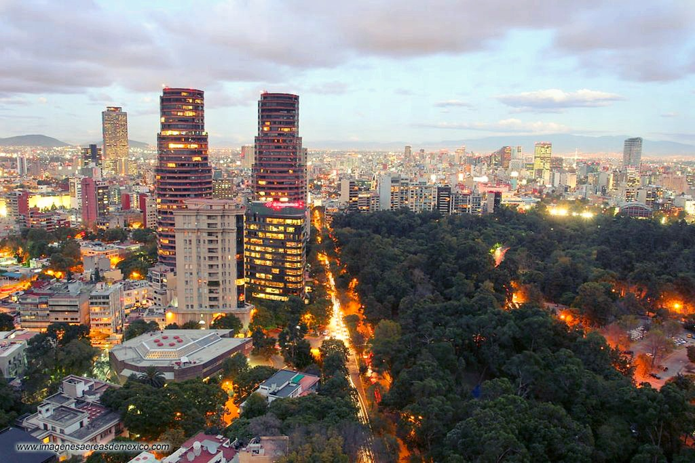
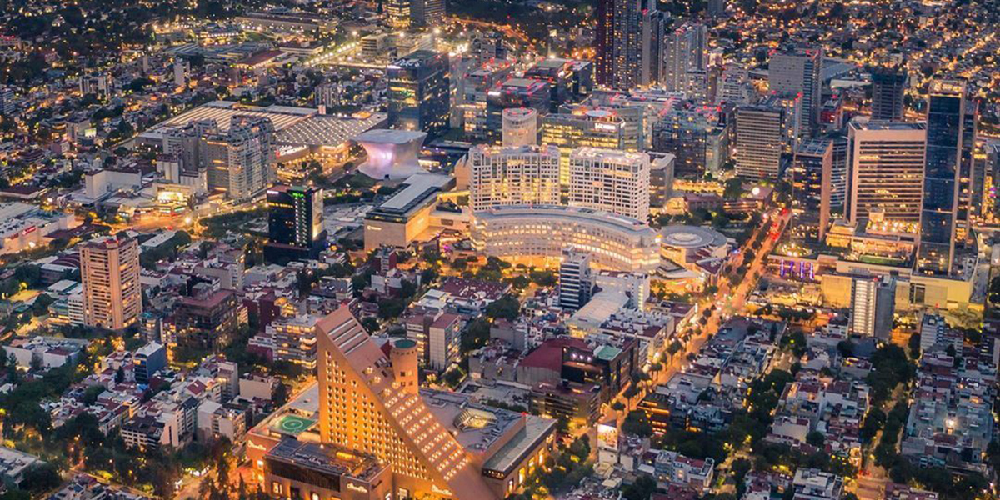

Polanco
Polanco es una colonia de la Ciudad de México, ubicada al norponiente de la misma en la alcaldía Miguel Hidalgo. La denominación Polanco es usada para designar dos grandes colonias, Polanco Chapultepec y Polanco Reforma. El área es sede de recintos culturales como museos y galerías; empresas, embajadas, y negocios de esparcimiento como restaurantes, tiendas de lujo y centros comerciales. La mayoría de sus calles y avenidas fueron nombradas a personajes de la ciencia y la literatura.